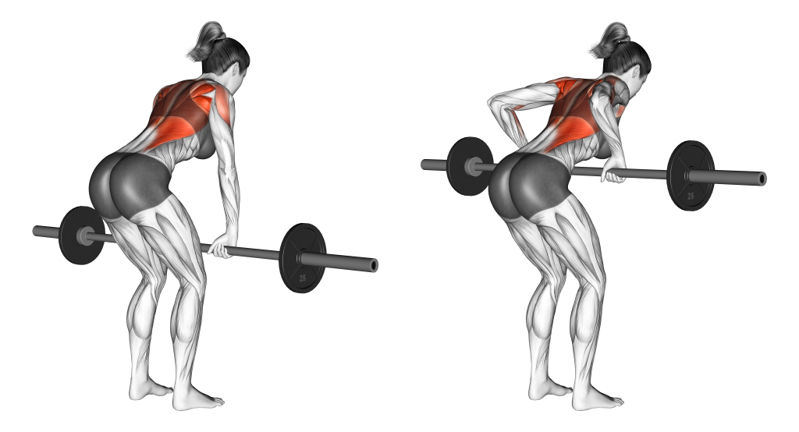
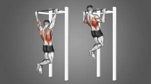
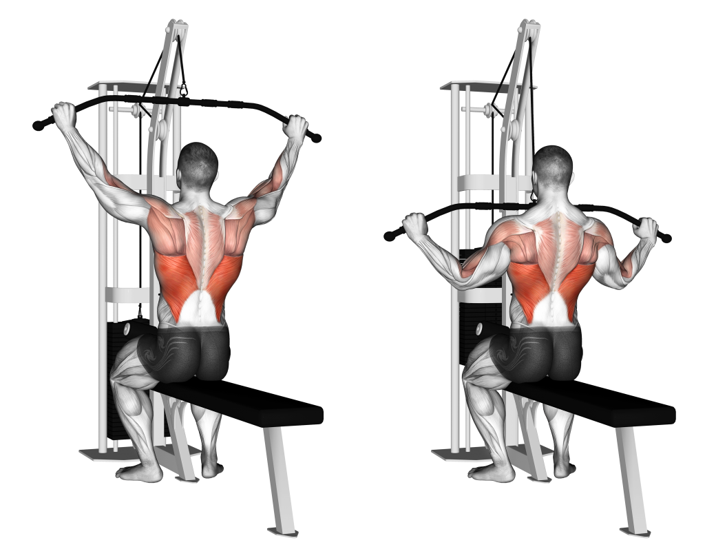
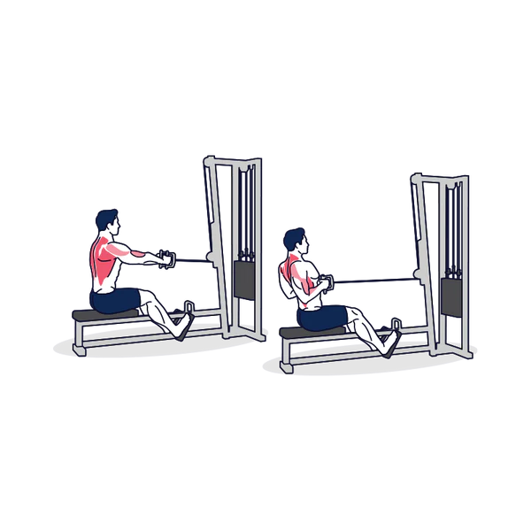
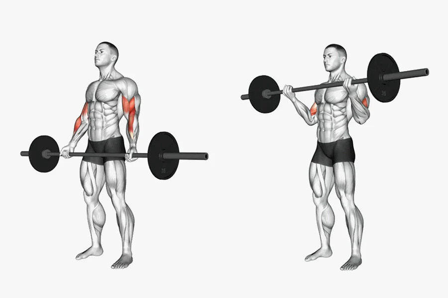
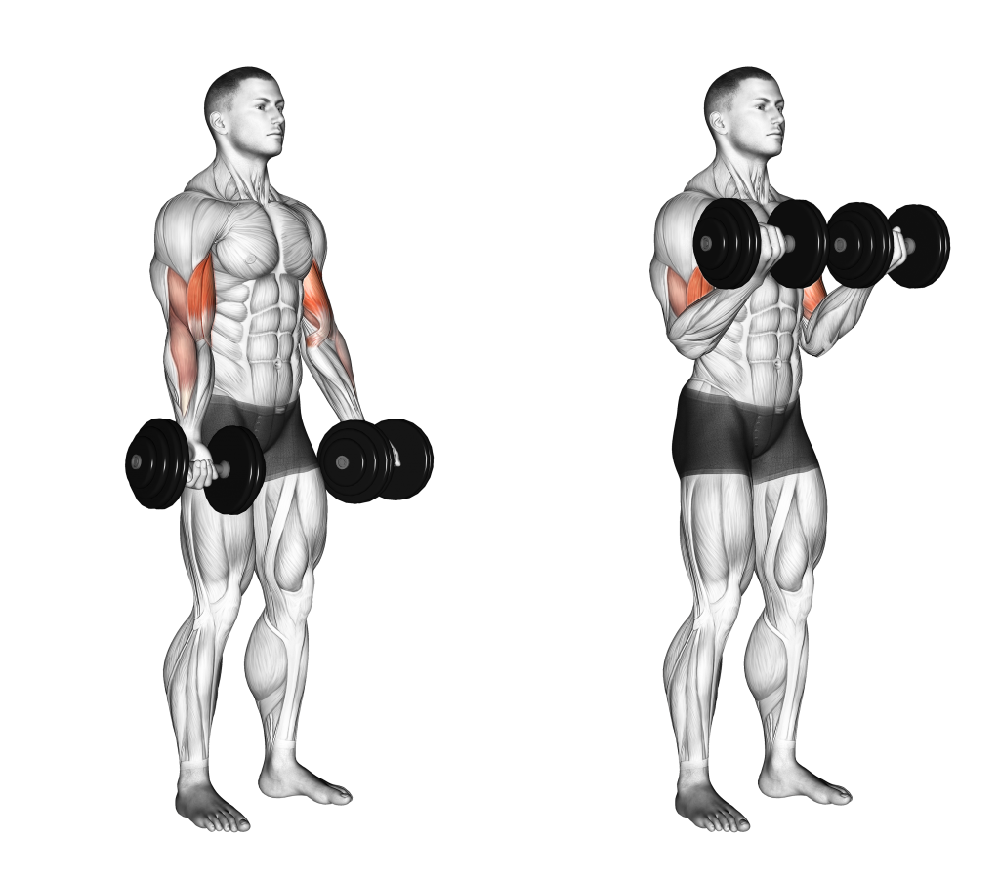
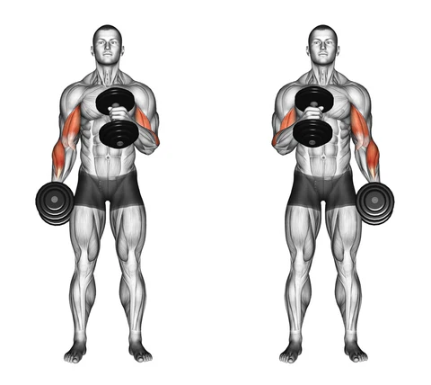
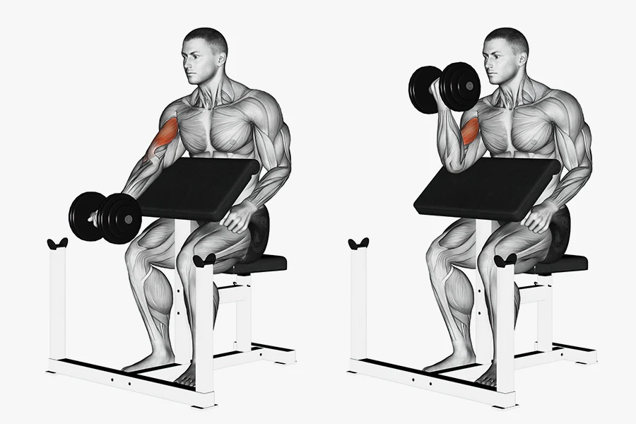
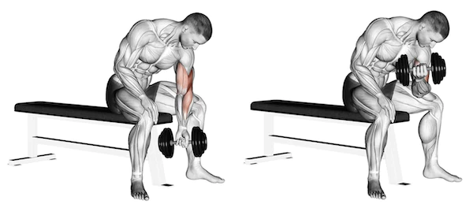

Deadlifts: This compound exercise targets multiple muscles in the back, including the lower back, lats, and traps. Stand with your feet hip-width apart, bend down and grasp a barbell with hands shoulder-width apart, and lift the bar by extending your hips and knees while keeping your back straight.
Bent-Over Rows: This exercise targets the upper back, including the rhomboids and lats. Bend your knees slightly, hinge forward at the hips, and maintain a flat back. Hold a barbell or dumbbells with arms extended, and pull the weight up towards your lower chest, squeezing your shoulder blades together.

Pull-Ups: Using an overhead bar, grip it with your hands slightly wider than shoulder-width apart and hang with your arms fully extended. Pull yourself up by engaging your back muscles until your chin is above the bar, and then lower yourself back down with control.

Lat Pulldowns: Sit at a lat pulldown machine, grasp the bar with hands wider than shoulder-width apart, and pull it down towards your chest while keeping your back straight. Squeeze your shoulder blades together and pause briefly before returning to the starting position.

Seated Cable Rows: Sit on a cable row machine, grasp the handles with your arms extended, and keep your back straight. Pull the handles towards your abdomen while squeezing your shoulder blades together, and then return to the starting position with control.

6 recommended exercises for biceps:
Barbell Bicep Curls: Stand with your feet shoulder-width apart, hold a barbell with an underhand grip, and let it hang in front of your thighs. Keep your elbows close to your sides and curl the barbell up towards your chest, contracting your biceps. Slowly lower the barbell back down to the starting position.

Dumbbell Bicep Curls: Stand with your feet shoulder-width apart and hold a dumbbell in each hand, palms facing forward. Keep your elbows close to your sides and curl the dumbbells up towards your shoulders, squeezing your biceps at the top. Slowly lower the dumbbells back down to the starting position.

Hammer Curls: Stand with your feet shoulder-width apart, hold a dumbbell in each hand, palms facing your torso. Keep your elbows close to your sides and curl the dumbbells up towards your shoulders, maintaining a neutral grip (palms facing each other) throughout the movement. Slowly lower the dumbbells back down to the starting position.

Preacher Curls: Sit at a preacher curl bench, rest your upper arms on the pad, and hold an EZ-bar or dumbbells with an underhand grip. Keeping your elbows in contact with the pad, curl the weight up towards your shoulders while contracting your biceps. Slowly lower the weight back down to the starting position.

Concentration Curls: Sit on a bench with your feet flat on the floor, hold a dumbbell in one hand, and rest your elbow on the inside of your thigh. With your palm facing up, curl the dumbbell towards your shoulder, squeezing your bicep at the top. Slowly lower the dumbbell back down to the starting position.

Chin-ups: To perform a chin-up, start by standing beneath a horizontal bar with your palms facing towards you, hands shoulder-width apart. With your arms fully extended, jump or step up to grasp the bar. Engage your core and begin pulling your body upward by flexing your arms, while keeping your elbows tucked in and your shoulders down and back. Continue the movement until your chin clears the bar, then slowly lower yourself back down to the starting position with control. Repeat for the desired number of repetitions.